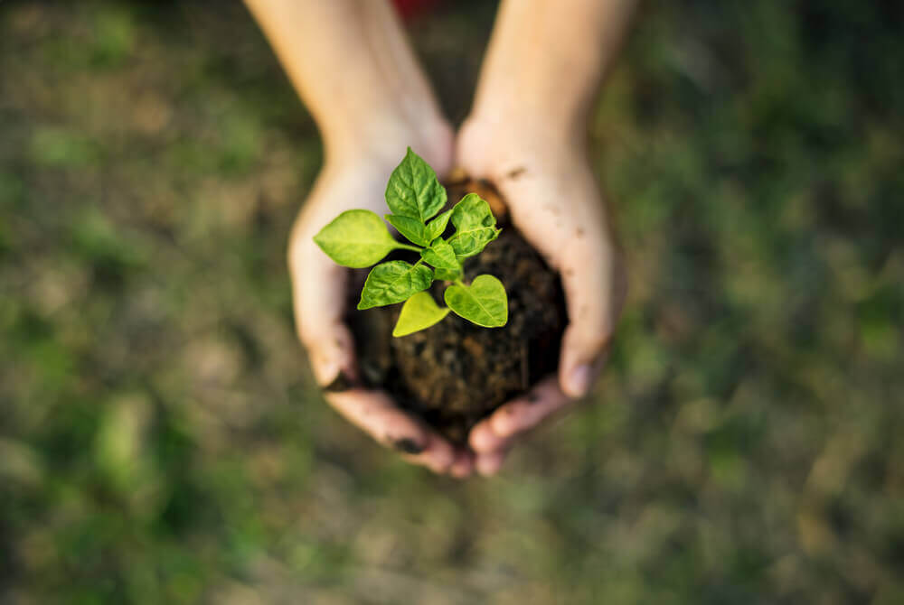

Bem-vindo ao EcoMinimal
Em um mundo onde o consumo excessivo e o desperdício de recursos se tornaram padrões comuns, o minimalismo surge como uma filosofia que propõe uma vida mais equilibrada e focada no essencial. Ao adotar um estilo de vida simples, podemos redescobrir o valor das pequenas coisas: uma alimentação mais natural, uma casa mais aconchegante e, acima de tudo, uma conexão mais profunda com o nosso planeta. A sustentabilidade não é apenas uma escolha ambiental, mas uma mudança de mentalidade que nos convida a repensar nossos hábitos de consumo e a impactar positivamente o mundo ao nosso redor.
A alimentação saudável está no centro dessa transformação. Optar por alimentos frescos, orgânicos e locais é uma forma de reduzir a pegada ecológica e, ao mesmo tempo, cuidar do nosso bem-estar. A agricultura regenerativa, por exemplo, oferece alternativas sustentáveis para a produção de alimentos, diminuindo o impacto das grandes indústrias e priorizando práticas que respeitam o solo e os ecossistemas. Mas, mais do que isso, viver de forma saudável também envolve o cuidado com o que colocamos no nosso corpo e o que deixamos para as futuras gerações, enfrentando desafios como a pobreza alimentar com soluções criativas e inclusivas.
No EcoMinimal, acreditamos que não precisamos depender da grande indústria para viver bem. Podemos cultivar nossos próprios alimentos, investir em hábitos simples e consumir de forma consciente, sem abrir mão da qualidade de vida. Ao fazer escolhas mais informadas e sustentáveis, podemos construir uma vida mais saudável e justa, tanto para nós quanto para o planeta. O caminho para um futuro mais verde e próspero começa com pequenos passos, mas, juntos, podemos criar um impacto duradouro e transformador.
 Sustentabilidade
Sustentabilidade